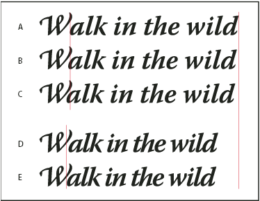

Kern and track
Kerning is the process of adding or subtracting space between specific pairs of characters. Tracking is the process of loosening or tightening the spacing between the characters in selected text or an entire block of text.
You can automatically kern type using metrics kerning or optical kerning. Metrics kerning (also called Auto kerning) uses kern pairs, which are included with most fonts. Kern pairs contain information about the spacing of specific pairs of letters. Some of these are: LA, P., To, Try, Ta, Tu, Te, Ty, Wa, WA, We, Wo, Ya, and Yo. Metrics kerning is set as the default so that specific pairs are automatically kerned when you import or type text.
Some fonts include robust kern-pair specifications. However, when a font includes only minimal built‑in kerning or none at all, or if you use two different typefaces or sizes in one or more words on a line, you may want to use the optical kerning option. Optical kerning adjusts the spacing between adjacent characters based on their shapes.

- A.
- Original text
- B.
- Text with optical kerning
- C.
- Text with manual kerning between W and a
- D.
- Text with tracking
- E.
- Cumulative kerning and tracking
You can also use manual kerning, which is ideal for adjusting the space between two letters. Tracking and manual kerning are cumulative, so you can first adjust individual pairs of letters, and then tighten or loosen a block of text without affecting the relative kerning of the letter pairs.
When you click to place the insertion point between two letters, kerning values appear in the Character panel. Metrics and optical kerning values (or defined kern pairs) appear in parentheses. Similarly, if you select a word or a range of text, the tracking values appear in the Character panel.
Tracking and kerning are both measured in 1/1000 em, a unit of measure that is relative to the current typeface size. In a 6‑point font, 1 em equals 6 points; in a 10‑point font, 1 em equals 10 points. Kerning and tracking are strictly proportional to the current typeface size.
 Adjust kerning
Adjust kerning
 Do
any of the following:
Do
any of the following:-
To use a font’s built‑in kerning information for selected characters, select Auto or Metrics for the Kerning option in the Character panel.
-
To automatically adjust the spacing between selected characters based on their shapes, select Optical for the Kerning option in the Character panel.
-
To adjust kerning manually, place an insertion point between two characters, and set the desired value for the Kerning option in the Character panel. (Note that if a range of text is selected, you can’t manually kern the text. Instead, use tracking.)
 Press Alt+Left/Right Arrow (Windows) or Option+Left/Right
Arrow (Mac OS) to decrease or increase the kerning between
two characters.
Press Alt+Left/Right Arrow (Windows) or Option+Left/Right
Arrow (Mac OS) to decrease or increase the kerning between
two characters. -
To turn off kerning for selected characters, set the Kerning option in the Character panel to 0 (zero).